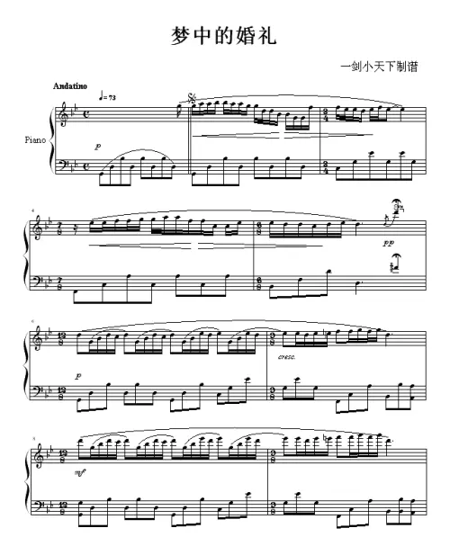
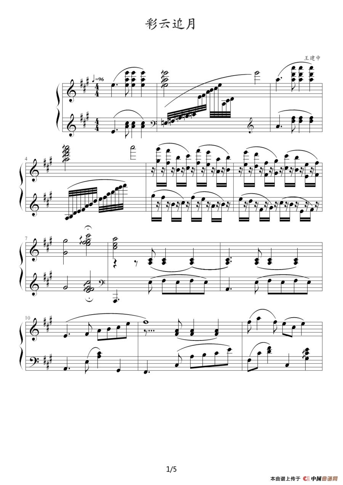
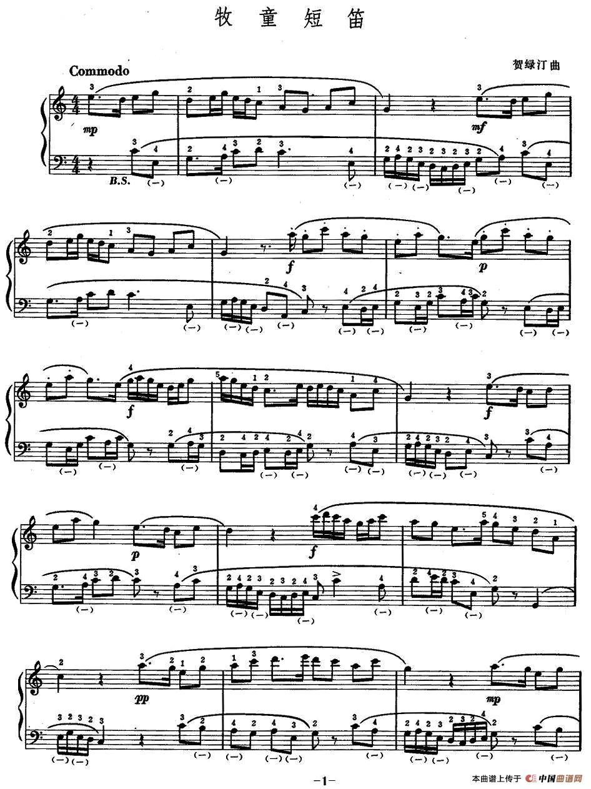
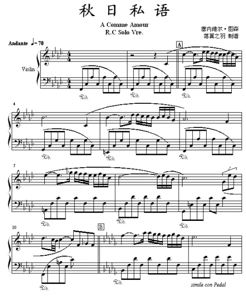

琴谱

梦中的婚礼

彩云追月

牧童短笛

秋日私语
交错的黑白键孕育着各种不同的美妙音乐，轻轻触按出一组和铉，铉振动出不可思议的乐声，钢琴就是如此迷人，它古朴、生动。
钢琴的音色是单纯而丰富的，柔如冬日阳光，盈盈亮亮，温暖平静。清冷如钢珠撒向冰面，粒粒分明，颗颗透骨。
琴声的魅力让人难以抗拒，琴声的美丽使我感受到了收获的喜悦。收获的喜悦给我带来了学习的动力，现在我对钢琴更是情有独钟，它让我陶醉。
美妙灵动的琴声从指间流泻而出，似丝丝细流淌过心间，柔美恬静，舒软安逸。
钢琴如生活，是一首永远弹不完的小曲，我们得认真、严肃对待每一个音符，让我们用心感受琴声，用心感悟人生。